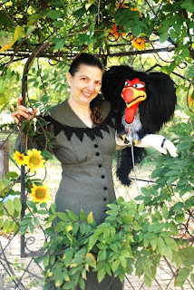

Reader Writes
9/29/2009
{kind=link}

Hi Clinton,Thank you so much for such an enjoyable time of refreshment and learning as I journeyed through the New millennium Course of Ventriloquism over the last few months. I have been in the field for the past 17 years. But I had never taken your Course until now. May I suggest to anyone out there if you haven't taken this Course and you want to improve your skills and learn some valuable information that you can't get anywhere else, take this wonderful Course. It is truly a gold mind! It will add nuggets of gold into your mind and make you even more creative in the Art of Ventriloquism!
Thank You so much for the New Millennium Course. I will continue to work with Ventriloquism in churches and hopefully the doors will open up soon for more Schools and the Libraries and where ever joy needs to be spread!
The character in this photo is Mr. Bad who originally was purchased from Maher Studios many years ago. Since then Mr. Bad has had a face lift you could say. (A brand new head was in desperate need.)
Blessings, Christine Campbell
"Creative Characters"